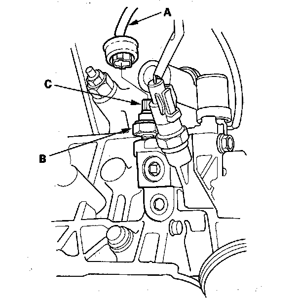

Oil Pressure Sender: Testing and Inspection
Oil Pressure Switch Test1. Remove the BLU/YEL wire (A) from the engine oil pressure switch (B).

2. Check for continuity between the positive terminal (C) and the engine (ground). There should be no continuity with the engine stopped. There should be continuity with the engine running.